03
Roll 678Gulf Coast · 湾岸
A
B
C
D
E
色彩分析COLOR
上：色相 × 饱和度，往外越浓下：红绿蓝三通道，左暗右亮
色
Color Analyser色彩分析
这一卷的颜色最集中在 蓝（190°–220°），这一段占了全部有色像素的 42%。平均饱和度 0.26，平均明度 0.66。
最浓的一格是 678·05L，饱和度 0.42。在看片台里打开任意一格，点「分析」能看那一格自己的直方图。
移到色轮上看是哪个颜色
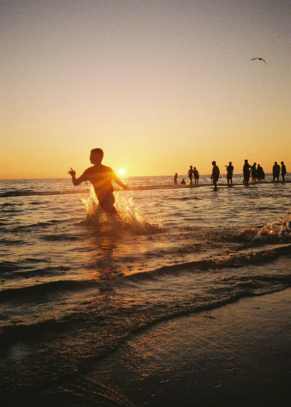
墨西哥湾这一侧的沙是白的，白到过曝。伞和躺椅在沙上排成没有规律的阵列，海鸥被人惊起，落下，再被惊起。
这一卷几乎没有正面的脸，只有背影、伞面、椅子的斜线。有几张干脆只剩海平线和天上一个点——半格的竖幅逼着人做减法：水留一条，其余全给天。
中间插进一段室内：玻璃穹顶，三角网格，网格外面是棕榈。从沙滩走进去，像从一段过曝走进一段曝光正确。
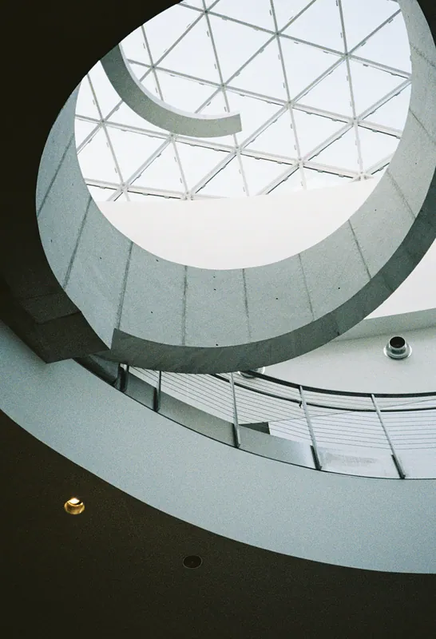
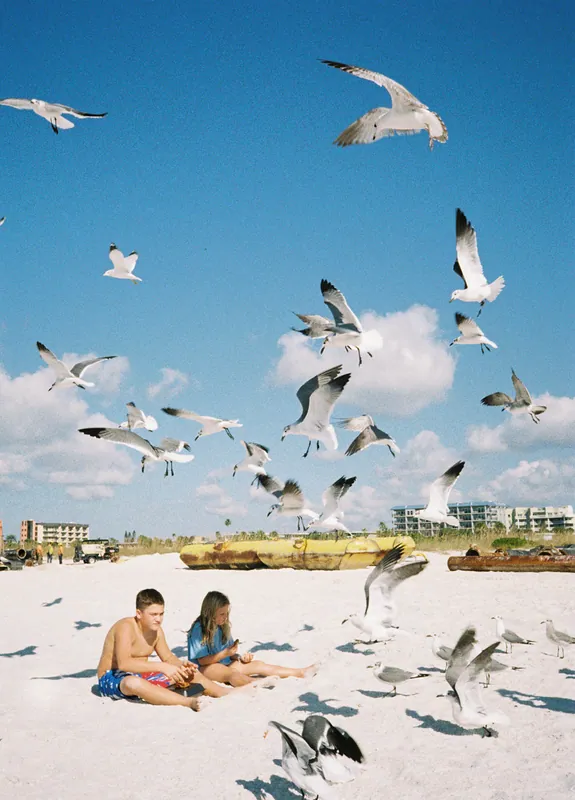
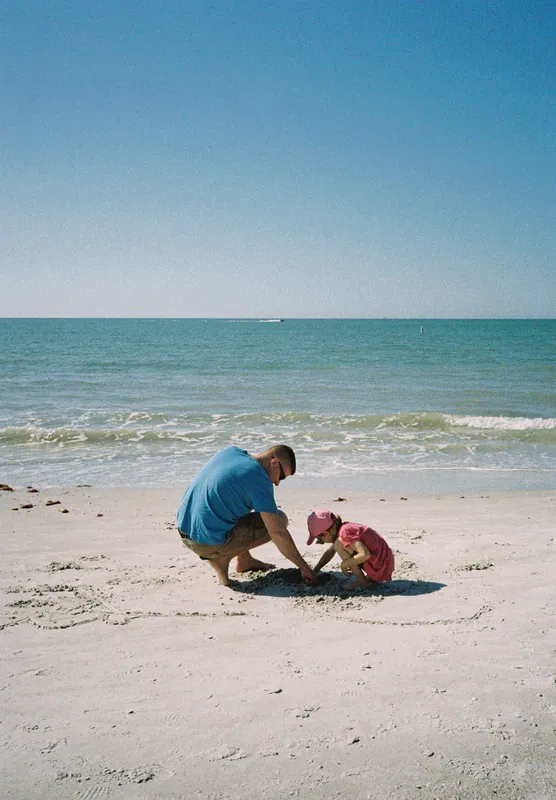
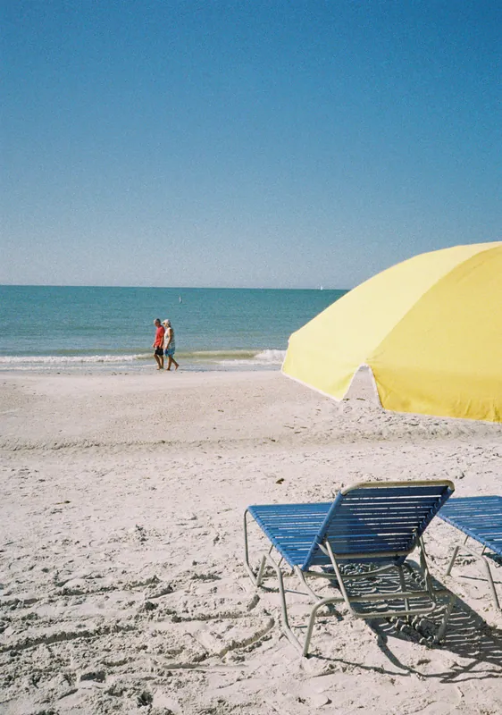
把水压到最低，剩下的全部让给天。卷 678
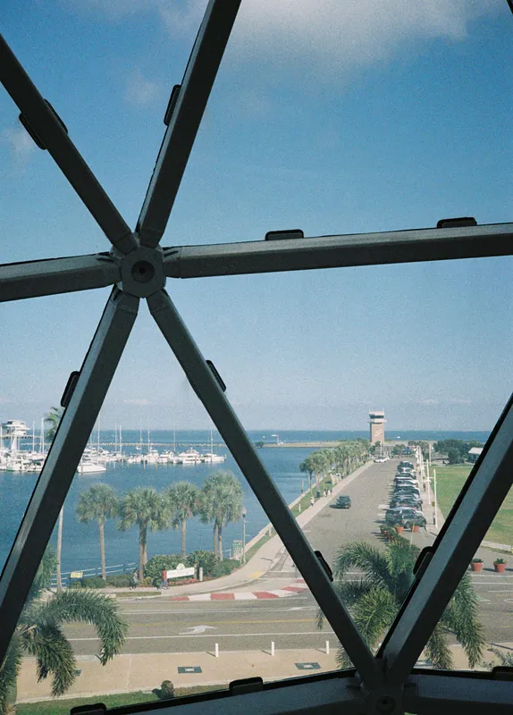
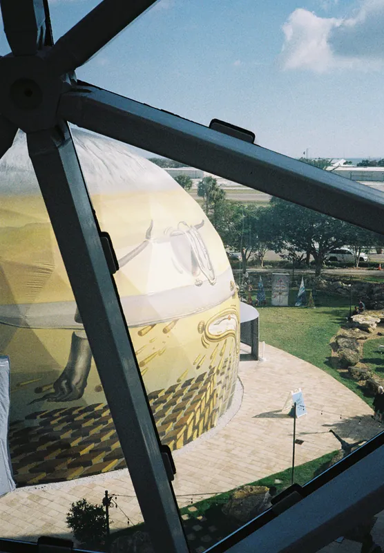
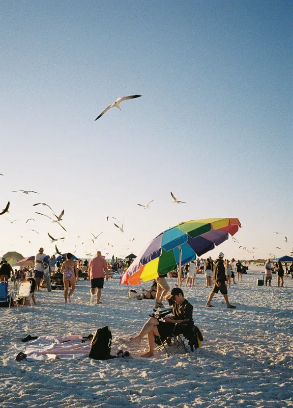
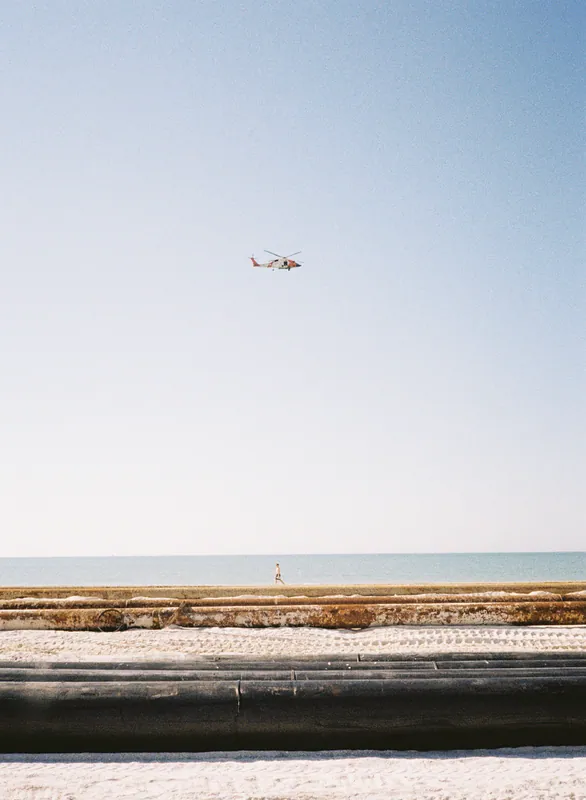
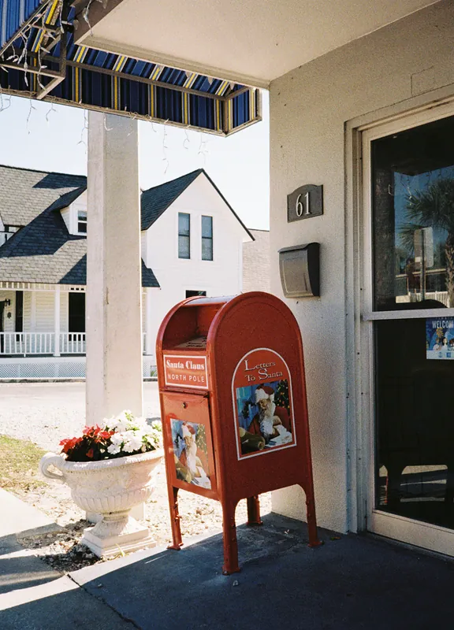
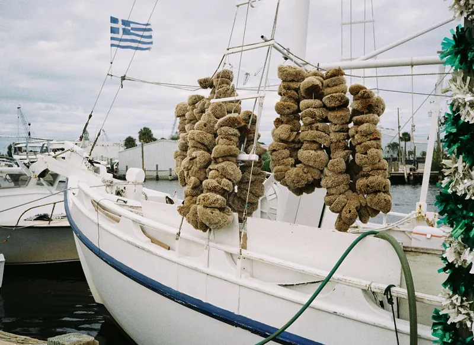
本卷共 52 帧版面选用 12 张，整卷见上方联系表。半格18×24，佛罗里达。